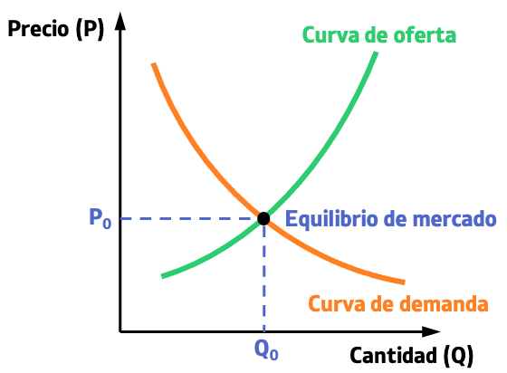

¿Qué es la Microeconomía?
La microeconomía es una rama de la economía que estudia el comportamiento de los individuos y las empresas en la toma de decisiones y cómo estas interactúan en los mercados.
Principales temas que estudia
- Decisiones del consumidor: cómo eligen qué bienes o servicios comprar según sus preferencias y presupuesto.
- Comportamiento de las empresas: cómo deciden qué producir, cuánto y a qué precio vender.
- Interacción en mercados: cómo se determinan los precios y cantidades de equilibrio mediante oferta y demanda.
- Asignación de recursos: cómo se distribuyen los recursos escasos de manera eficiente.
Conceptos fundamentales
- Oferta y demanda: modelo básico que explica cómo se forman los precios en el mercado.
- Elasticidad: mide la sensibilidad de la cantidad demandada o ofrecida ante cambios en precios o ingresos.
- Costos de producción: incluye costos fijos, variables y marginales que afectan las decisiones de la empresa.
- Utilidad: nivel de satisfacción que obtiene un consumidor al consumir un bien o servicio.
- Beneficio: diferencia entre ingresos y costos de una empresa. Se busca maximizarlo.
Tipos de mercados
- Competencia perfecta: muchas empresas, productos idénticos, sin poder de mercado.
- Monopolio: una sola empresa domina el mercado, fija precios y controla la producción.
- Oligopolio: pocas empresas grandes que pueden influir en los precios.
- Competencia monopolística: muchas empresas que venden productos similares pero diferenciados.
Ejemplo de curva de oferta y demanda
Las curvas de oferta y demanda muestran cómo se ajusta el precio de un bien en función de su cantidad disponible y de las preferencias del consumidor.
